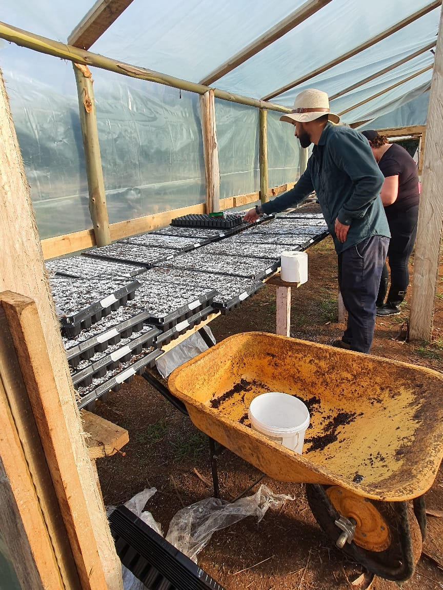
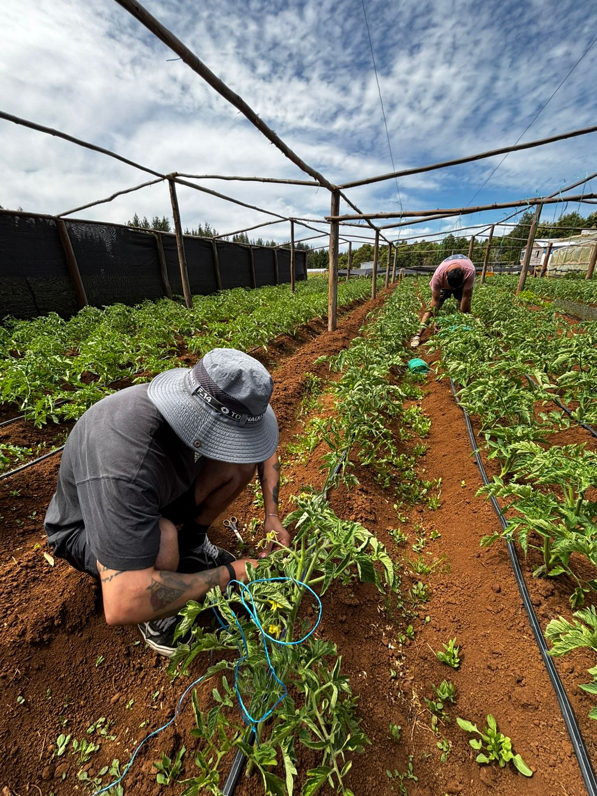
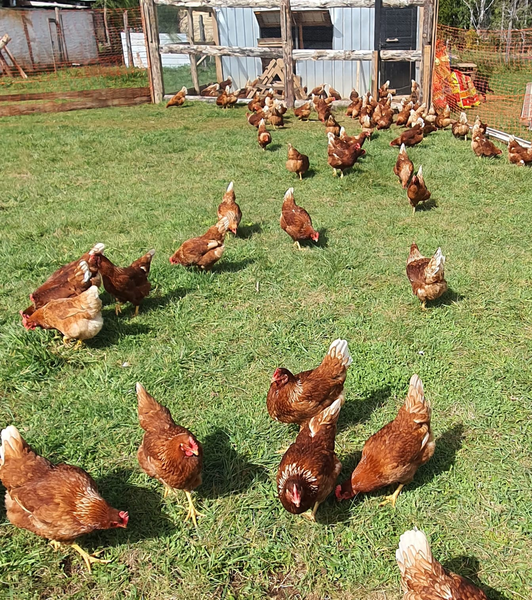
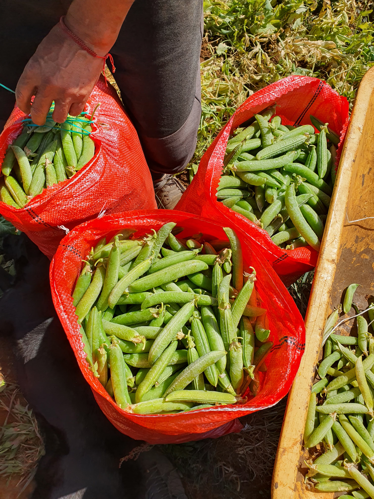
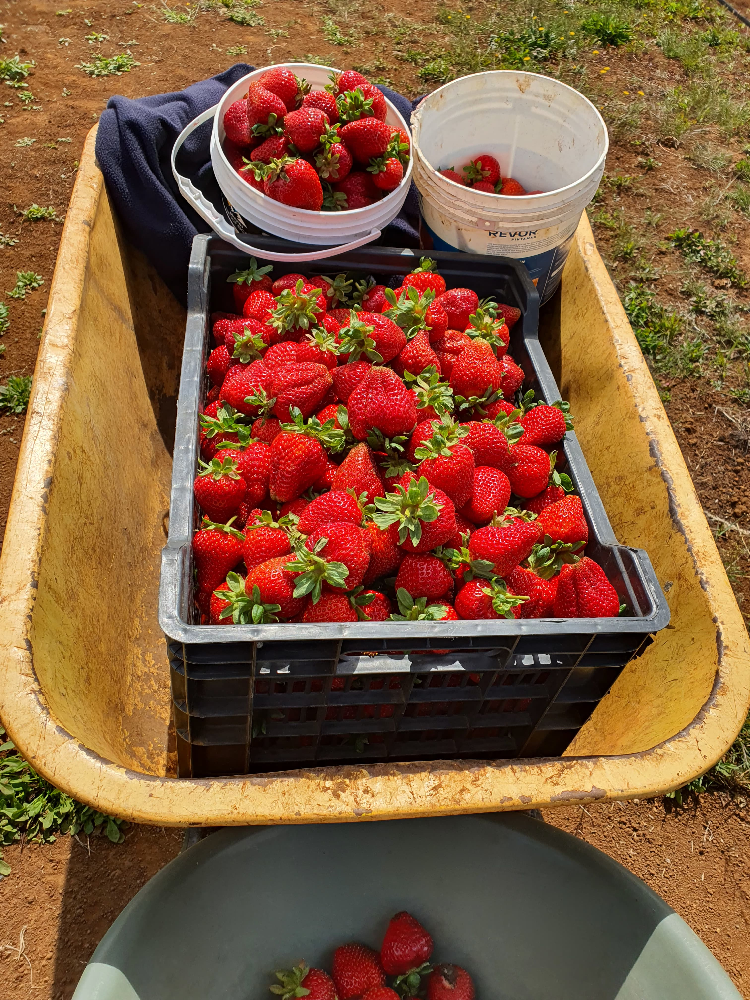
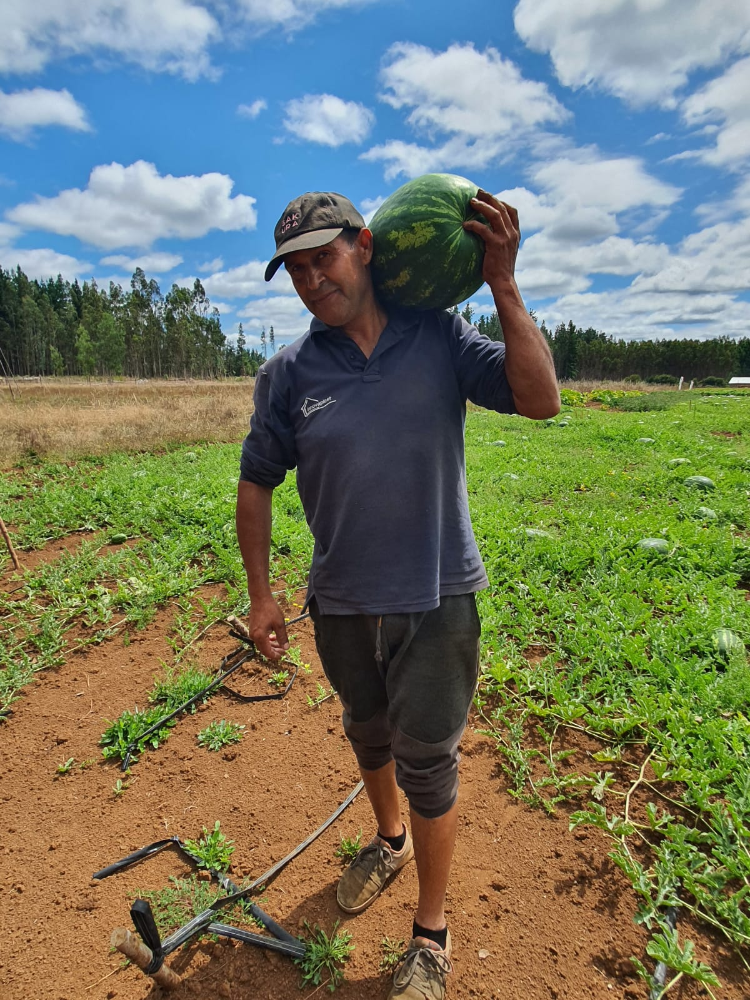
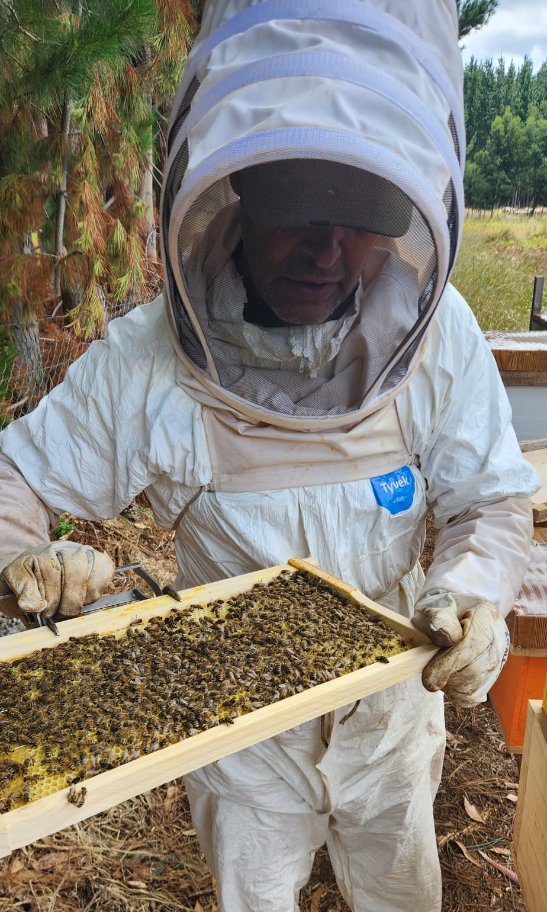
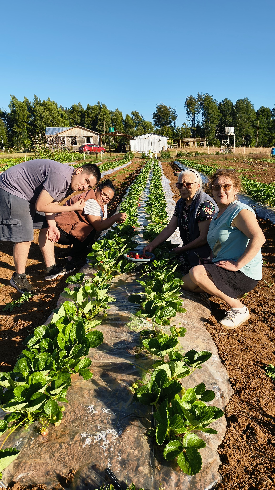
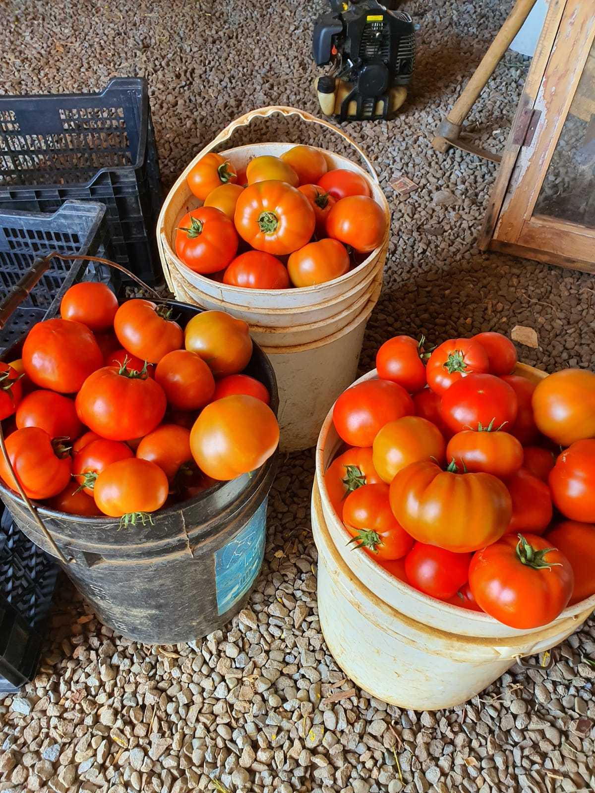

Tradición familiar
Trabajamos la tierra de Antihuala con el respeto de siempre, cultivando vida y generando experiencias.
Nuestra GaleríaNuestra Historia
Rincón Agricultor nace el 2024 como un sentido homenaje a la persistencia de mis padres y su inmenso amor por la tierra.
Somos un proyecto familiar que busca mantener vivas las tradiciones del campo en la Provincia de Arauco, siempre respetando la vida y los tiempos del campo.
Lo Que Hacemos
Nuestras tierras son un ecosistema vivo cuidado con mucha dedicación. Aqui actualmente nos enfocamos en tres proyectos agrícolas:
🌱 Cultivos
- Sandías Santa Amelia: Variedad conocida por su rojo intenso y su alto dulzor.
- Frutillas Albión: Variedad conocida por su gran tamaño y dulzor.
- Tradicionales: Arvejas, papas y tomates.
Todos los cultivos son sembrados buscando generar el menor impacto al medioambiente, utilizando mulch, cintas de riego, abonos orgánicos e insecticidas naturales.
🥚 Gallinas
Huevos frescos de nuestras gallinas ponedoras, criadas con cariño, espacio y bienestar, respetando su ciclo natural.
🐝 Abejas
Miel extraída de nuestras colmenas, las cuales son promotoras de la vida en nuestro campo, polinizando cada uno de nuestros cultivos.
Galería 2025-2026
Registros visuales de nuestro trabajo, nuestros vecinos y la abundancia de nuestras tierras en Antihuala.









Conecta con Nosotros
Escríbenos, síguenos en nuestras redes y si quieres ver nuestro trabajo de cerca, visítanos.
📍 Ubicación: Antihuala, Los Álamos, Bío Bío (Ver en Maps)
✉️ Correo: contacto@rinconagricultor.cl
📷 Instagram: @rinconagricultor